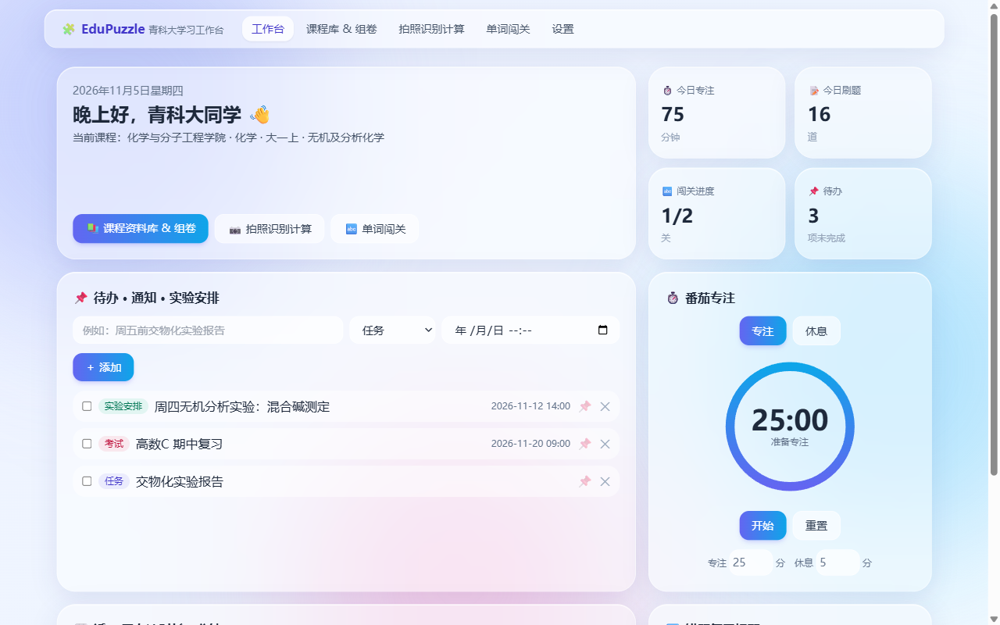
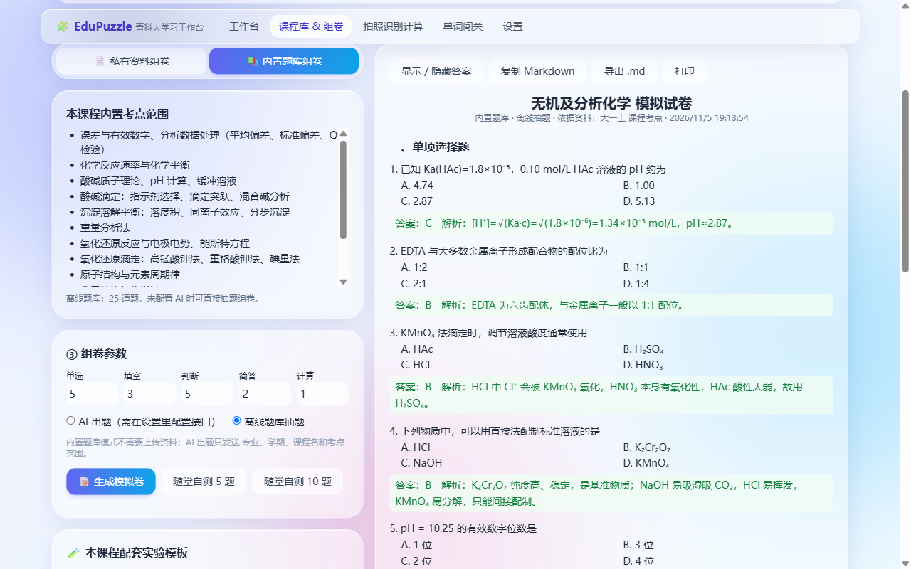
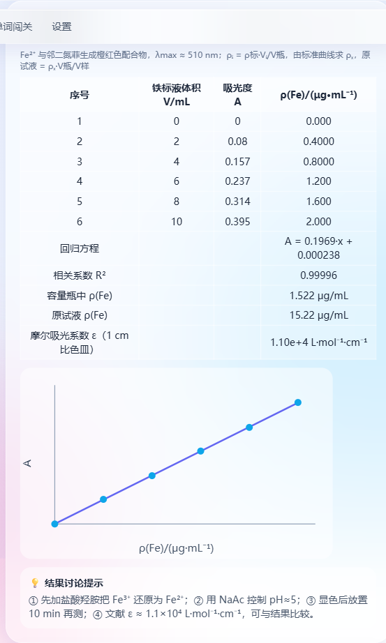
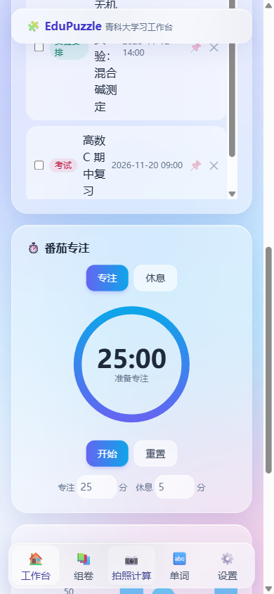

面向青岛科技大学本科生：学期课程库、双模式 AI 组卷、拍照识别实验数据自动计算、单词闯关、番茄专注工作台。所有数据只存在你的设备上，无需注册。
Windows 10 / 11 · 单文件 EXE，双击即用

学院 → 专业 → 年级学期 → 课程四级选择，大一上和大一下的课分开，考点不混。
有资料：上传 PDF / Word / TXT，按自己的资料出题；没资料：直接用内置题库出卷。5 种题型，附答案解析。
《无机及分析化学实验》全套 17 个模板，另有物理、化工、环境、物化模板，自动算浓度、含量、相对平均偏差。
拍下实验原始记录，本地 OCR 识别，校对后一键填进模板计算，结果表格可直接复制进实验报告。
导入专业词表，词库绑定学期课程，关卡制背诵，错题循环复习。
待办、课程通知、实验安排、番茄钟、学习统计看板，一进来就知道今天该做什么。



EduPuzzle.exe。资料、试卷、识别记录、词库、待办全部保存在你自己的浏览器 / 电脑里，不上传任何服务器；拍照识别在本地完成。只有你在「设置」里填写 AI 接口并使用 AI 出题时，相关文字才会发送给你自己选择的 AI 服务。